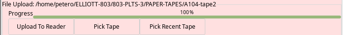
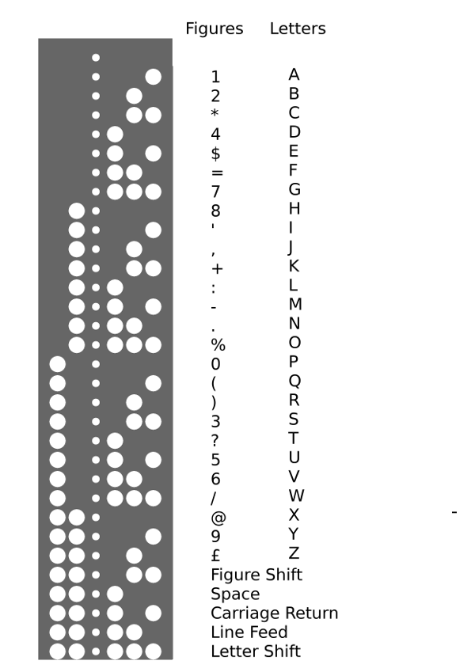
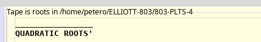
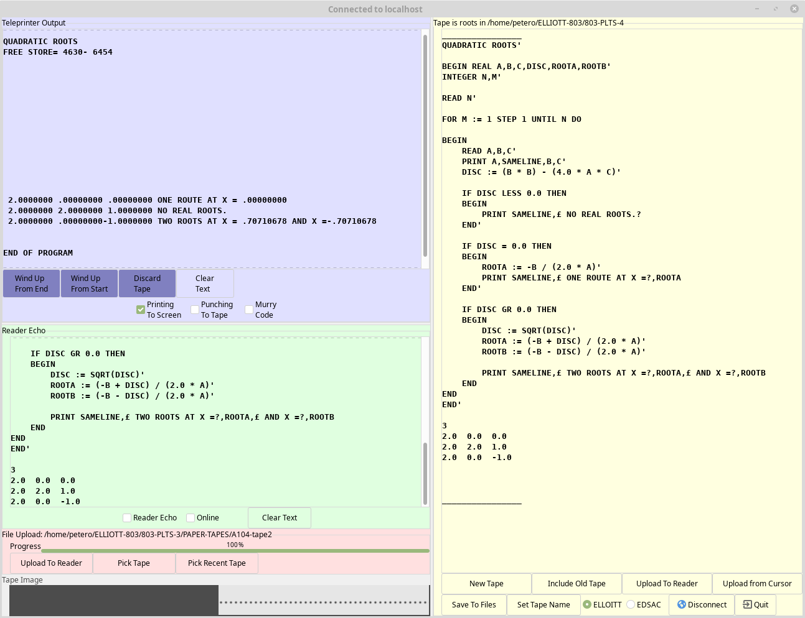
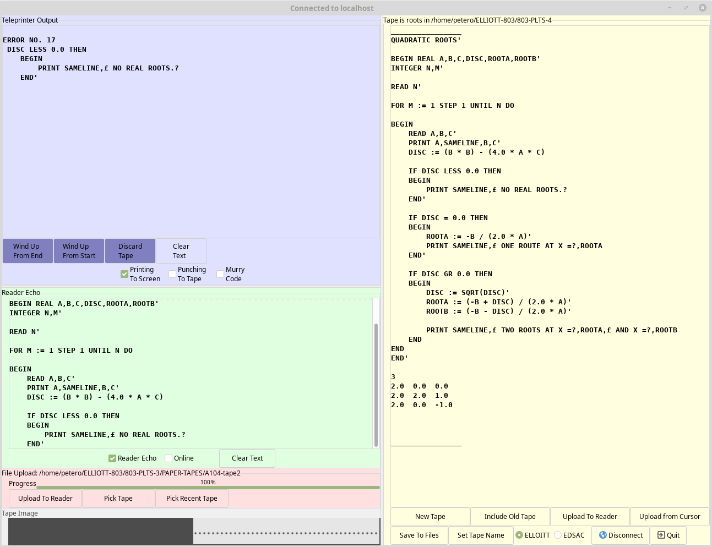

The Elliott 803 at The National Museum of Computing has a Paper Tape Station type 3A. This is capable of hosting two tape readers, two tape punches and a teleprinter (for output only), but it actually only has the logic boards installed for one reader and one punch.
Some years ago the "Paper Less Tape Station" (PLTS) was built and connected into the PTS's wiring. It acts like the logic boards for the second reader and the teleprinter. The PLTS communicates with a Raspberry Pi (Pi) via an opto-isolated RS-232 interface and the Pi provides a GUI to allow paper tape image files to be selected and then uploaded into the virtual second tape reader. Likewise output to the teleprinter is passed up to the Pi where it is displayed in a window.
Recent enhancements to the PLTS and the Pi application have allowed the Pi's keyboard to be used to provide online or interactive input to the 803.
The 803 emulator also has the PLTS functionality built-in, but in this case the interface is via a network socket (on port address 8038).This PLTS application can be used to connect to either the real 803 (via a USB-to-RS232 interface) or to the emulator via a TCP/IP connection. The communications protocol is identical in both cases.
There are a number of tools and libraries that are needed to build the emulator application.
If you don't already have a C compiler installed on your system, add the "build-essential" package to the command below.
sudo apt install gtk+-3.0-dev cmake
Other packages will also be installed to meet all the dependencies.
The package names used above apply for Debian derived distributions and may be different on other distributions.
The PLTS gui is hosted on github
To build the PLTS run
git clone https://github.com/PeterOGB/PLTS4.git
cd PLTS4
cmake .
make
The PLTS can be run from the build directory or installed in /usr/local/
To place the executable into /usr/local/bin and other resources into /usr/local/share/803-Resources run
sudo make install
The "PAPER-TAPES" directory contains the two Algol 60 compiler tapes (A104-tape1 A104-tape2) and a couple of example Algol programs (fibbignum.ele roots.utf8). Copy this directory to some where easy to find with a file browser, like your home directory for example.
The GUI is made up of two windows, one to manage the connection to the 803 or to an emulator, and one to edit and upload tapes and view teleprinter output.
Use the "Serial Connection to PLTS" to select the appropriate serial device and then press the "Make Serial Connection" button.
Either set the IP address of the host running the 803 Emulator or enable "Connect To Localhost" then press the "Make Network Connection" button.
To use the PLTS GUI to create and edit tapes without it being connected to an 803 press the "No Connection" button.
This is shown with a light green background.
When the "Reader Echo" check button is set, each character read by the 803 is shown in the text area. This allows the user to monitor the reading of their tapes by an 803 program such as the Algol compiler. So for example when the Algol compiler finds an error in a program the user can see roughly where the error occurred.
When the "Online" check button is set, characters typed into the text area are sent to the 803 or emulator. This is an advanced feature and its use is covered in the Emulator manual.
This is shown with a lilac background.
When the "Printing To Screen" check button is set, each character sent to the 803's teleprinter is shown in the text area. This should be turned off before punching any binary format tapes.
When the "Punching to Tape" check button is set, each character is written to buffer which can then be saved as a tape file using the "Wind up" buttons.
Normally a tape is wound up "From (the) End" but there is one situation when using the Algol Compiler when a punched tape needs
to be read starting at the end. In this case use the "Wind Up From Start" button to create the tape file.
This is shown with a pink background
The "Pick Tape" and "Pick Recent Tape" buttons are used to select a telecode format file to be uploaded into the virtual tape reader.
Due to the way the emulator works, tape uploads can be quite slow on some platforms, so a progress bar is provided to show when an upload is complete.
This is shown with a light yellow background
The five hole paper tapes used on the Elliott 803 used a proprietary character set and encoding.
Although the tape editor internally stores the text in UTF-8, it will only allow valid telecode characters to be inserted. If a character is typed that does not map to a telecode character it is discarded. All letters are automatically converted into upper case. During conversions from UTF-8 to Elliott telecode a Carriage Return and Line Feed pair are inserted at the start of each line and are followed by a Figure Shift or Letter Shift character as appropriate. Additional Shift characters are inserted where needed. 16 blanks (displayed as "_") are added to the start and end of the telecode data.
The editor supports the addition of comment text which is not subject to the telecode rules above and is NOT uploaded to the real 803 or to the emulator.
Text placed between [ and ] is highlighted in Blue to show it is a comment. Typing [ or ] will insert a [] pair to ensure comments are always balanced. A comment block can only be deleted if it is empty.
A selected block of text can be wrapped in [ ] by pressing F1. F2 will remove the outer pair of [] from a highlighted comment block, but only if the comment contains no non-telecode characters.
The "Include Old Tape" button pops up a standard "file chooser" dialog to allow the selection of an existing tape file. The contents of the file are examined to determine the format. Files containing Elliott or EDSAC telecode begin with some blank tape punched with the appropriate runout characters. Files containing UTF-8 (and also UTF-16 to allow for files created on Windows machines) are checked for an appropriate Byte Order Mark (BOM) or for valid UTF-8 if no BOM is present.
If required, file contents are converted to UTF-8 and inserted at the cursor position.
The "Save to Tape" button either saves the currently selected text or the whole contents of the editor. It writes two files, one in UTF-8 (with ".utf8 extension") , and one in telecode (with ".ele" or ".edsac" extension.
As with reader uploads, telecode format files have been stripped of any [comments] in the UTF-8 text.To simplify tape naming, the "Set Tape Name" button strips all trailing ".ele" , ".edsac" and ".utf8" extensions from the chosen filename. The currently chosen tape name is displayed like this at the top of the editor:
The "Upload To Reader" converts either the whole of the editor text or just the currently selected text into telecode and uploads it into the virtual tape reader. "Upload from Cursor" translates and uploads the text between the current cursor position and the end of the editor text.
The progress bar in the Tape Upload section is updated as the tape is uploaded from the editor.
The example below shows an Algol program has been typed into the tape editor and saved with the name "roots". This has been successfully compiled with the Algol Compiler and run to produce output on the teleprinter.
Before starting to type a new program into the tape editor, press the "New Tape" button to clear any existing text. Then Press "Set Tape Name" to give the tape file a name and location. Periodically press "Save to Files" to update the saved versions.
The "Include Old Tape" button opens a file selector, and the selected file is inserted at the current cursor position. UTF-8 files will be stripped of all characters that do not have an equivalent in the current telecode, except where they appear in inside comments.
NOTE: There are no "undo" features. Also there is no warning of unsaved changes when pressing "New Tape" or when quitting.
The next example shows an Algol program has been typed into the tape editor and saved with the name "roots". This has been compiled with the Algol Compiler which detected an error in the program. The teleprinter output shows the error number ( 17 ) and the text immediately after the error.
From the 803 Algol manual :
17 (a) No end or semicolon after statement in compound tail, (b) No colon after label. (c) Impermissible beginning to statement.
Paper Less Tape Station GUI Version 4 User Guide by Peter Onion CC BY-NC-SA 4.0


GNU GPL V3 Copyright © 2020 Peter Onion